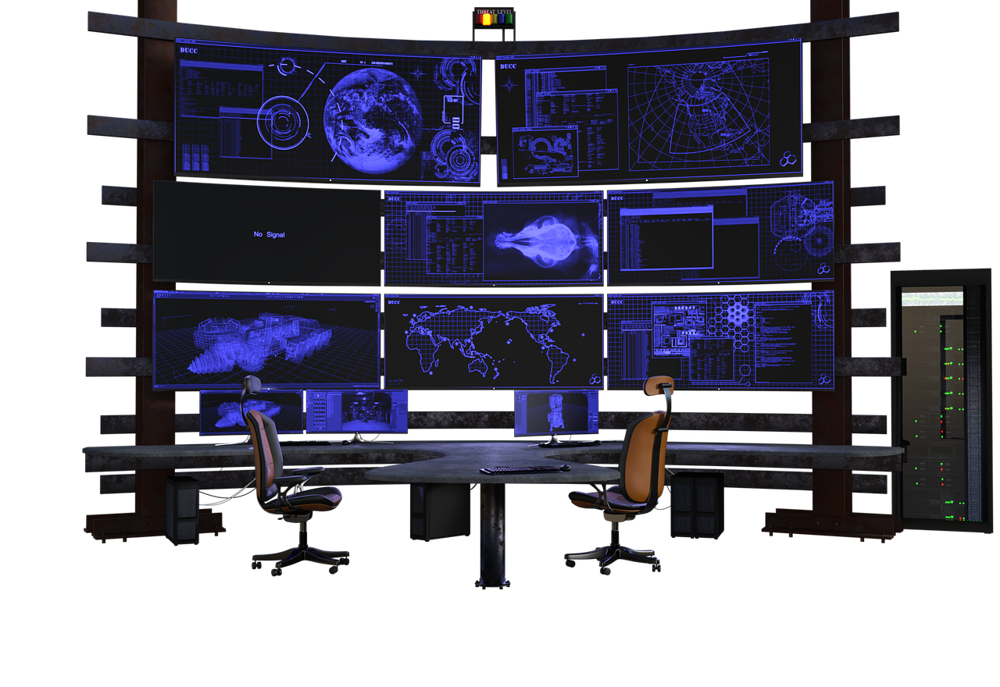

REDE DE COMPUTADORES
O CURSO
REDE DE COMPUTADORES é ministrado em um ambiente que simula uma empresa real, com computadores (SO Linux e Windows), roteadores, switches, cabeamento e demais equipamentos, trazendo a vivência que você precisa para ser competitivo no mercado de trabalho. Você vai aprender a dimensionar o uso de equipamentos multiusuários. Configurar acesso e disponibilidade para internet e intranet, roteadores e provedores. Trabalhar com sistemas de gerenciamento de redes, sistemas operacionais e simulação de ambiente de Cloud Computing. E com os novos conhecimentos sobre hardware, software e modos de funcionamento, também vai ser capaz de otimizar o desempenho dos computadores, adequando a estrutura física ao seu potencial de produção, o que aumenta o desempenho. Tudo isso de acordo com as regras de segurança.